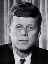

Hey friends! Sometimes when I'm feeling down, I like to read
"I Have a Dream"

Martin Luther King Jr (1963)
I have a dream that one day this nation will rise up, and live out the true
"We hold these truths to be self-evident, that all men are created..."
JFK's Inaugural Address
John F. Kennedy (1963)
And so, my fellow Americans: ask not what your country can do for you-- ask what you can do for your country.
"House Divided" Speech

Abraham Lincoln (1858)
I do not expect the Union to be dissolved - I do not expect the house to fall - but I do expect it will cease to be divided.
It will become all one thing, or all the other.